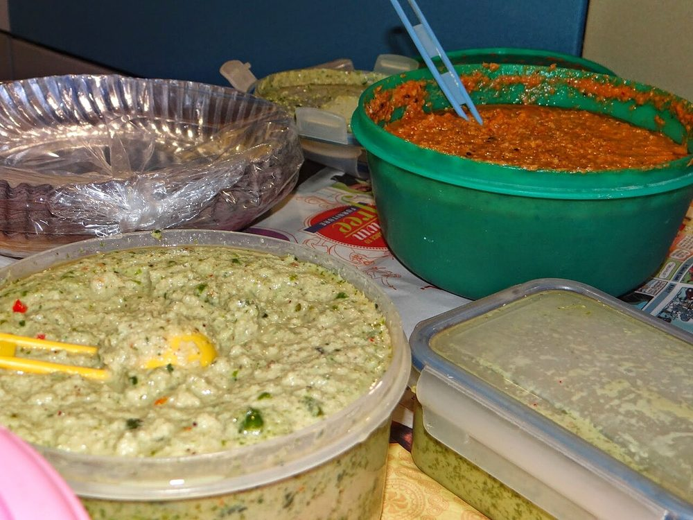

Prep25 min
Cook20 min
Total45 min
Serves4
Difficultymoderate
Contains: fish
Ingredients
Quantities for 4.
- 4 pomfret fillets, about 150g each, or 2 small whole pomfret Fishany firm white fish works
- 1 cup, freshly grated Coconutfrozen grated coconut, thawed, is fine
- 2 packed cups, stalks included Coriander Leaves
- 1/2 cup leaves Mintoptional
- 4, stalks removed Green Chilli
- 6 cloves Garlic
- 1 tsp Cumin Seeds
- 1.5 tsp Sugarbalances the lime
- 2, juiced Lemon
- 1 tbsp Vinegarcane vinegar if you have it
- 1/2 tsp Turmeric
- to taste Salt
Equipment
steamer, blender, stovetop
Before you start
- Pat the fish bone dry, rub with half the lemon juice and 1/2 tsp salt, and rest 15 minutes in the fridge.
- Soften banana leaves over a low flame for a few seconds until they turn glossy and pliable — they crack if used cold. Baking parchment works if you cannot find them.
- Grate the coconut fresh if you can; desiccated coconut makes a dry, grainy chutney.
Method
- Blend the coconut, coriander, mint, green chilli, garlic, cumin seeds, sugar, turmeric, remaining lemon juice, vinegar and salt to a thick paste.Add water a tablespoon at a time, no more than 3 tbsp total. A watery chutney runs off the fish.
- Taste the chutney and correct it now — it should be sharp, sweet and hot all at once, and it will taste milder once steamed.
- Cut the softened banana leaf into rectangles roughly twice the size of each fillet.
- Spread a spoon of chutney on the leaf, lay the fish on it, then blanket the fish with a thick layer of chutney on top and sides.Be generous. The chutney is the dish, not a seasoning.
- Fold the leaf over into a snug parcel and tie with kitchen string or secure with a toothpick.
- Set the parcels in a steamer over rapidly boiling water, cover, and steam 12 minutes for fillets or 18 for whole fish.
- Open one parcel at the edge and press the thickest part — the flesh should part into flakes with no translucent centre.Overcooked pomfret turns cottony in about two minutes flat. Check early.
- Rest the parcels 3 minutes off the heat, then serve them closed so each person opens their own.
Storage
Best eaten the day it is made. Refrigerate leftover parcels up to 2 days and re-steam 5 minutes; never microwave, which toughens the fish.
Nutrition Good estimate
| Per serving157 g | Per 100 g | |
|---|---|---|
| Calories | 171 kcal | 109 kcal |
| Protein | 11.1 g | 7.1 g |
| Carbohydrate | 16.2 g | 10.3 g |
| of which sugars | 5.4 g | 3.4 g |
| Fibre | 5.5 g | 3.5 g |
| Fat | 8.2 g | 5.2 g |
| of which saturated | 6.2 g | 3.9 g |
| of which unsaturated | 1.3 g | 0.8 g |
Worked out from the listed quantities; most of the ingredient list could be weighed. Estimated from raw ingredients using USDA FoodData Central. Cooking changes are not modelled, and added salt is excluded, so sodium is not given.
Recipe v1.0.0, last updated 2026-07-31. Curated for Khaana and kept under version control.